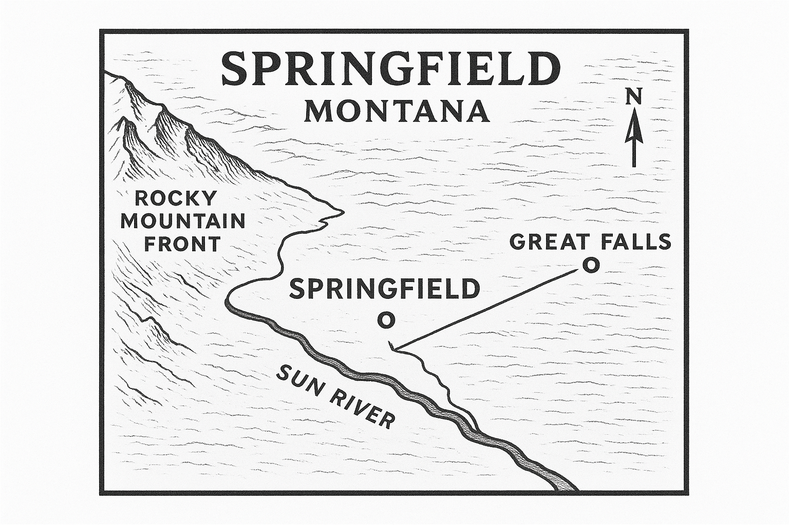

About Our City

Springfield is located in north-central Montana, nestled in the foothills where the Rocky Mountain Front meets the Great Plains. Our municipality sits along the scenic Sun River, approximately 22 miles southwest of Great Falls.
Founded in 1862 and incorporated in 1886, Springfield has grown from a frontier trading post to a thriving community of nearly 36,000 residents. Our diversified economy spans manufacturing, healthcare, agriculture, technology, and services.
We take pride in our rich history, strong sense of community, and the natural beauty that surrounds us. From our award-winning public library to our historic downtown district on the National Register of Historic Places, Springfield offers the best of small-town Montana living.
Municipal Government
Springfield operates under a council-manager form of government. The City Council consists of the Mayor and six council members elected at-large to four-year staggered terms. The Council appoints a professional City Manager to oversee daily operations.
Current Leadership
- Richard "Rick" Thompson — Mayor (2022-2026)
- Jennifer Martinez — City Manager
City Council meetings are held the first and third Mondays of each month at 7:00 PM in Council Chambers, 100 Central Square. Meetings are open to the public.